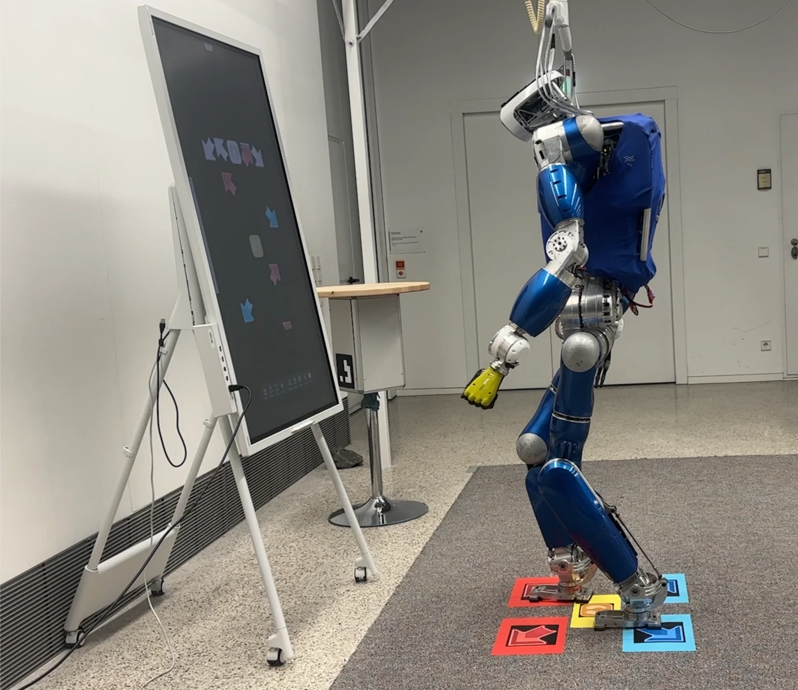

Feasible plans within practical time budgets
Compare normalized success rates across three difficulty settings. Success is normalized over terrains solved by at least one planner.
IEEE Robotics and Automation Letters 2026
Jointly deciding which foot to move and where to place it.
1 KAIST2 German Aerospace Center (DLR)3 Technical University of Munich
† Corresponding authors · Accepted for publication
The idea
A unified footstep planner for constrained terrain and time-critical stepping.
Footstep planning for humanoid robots requires simultaneously reasoning over discrete stepping sequences and continuous foot placements under strict time budgets. In this paper, we propose a graph-based optimization approach for humanoid footstep planning within the Graphs of Convex Sets (GCS) framework.
We first formulate a nonconvex quadratically constrained quadratic program (QCQP) that captures terrain feasibility and kinematic reachability. We then construct a mode-aware graph, where each node represents a kinematically feasible convex region associated with a locomotion mode and each edge encodes a feasible transition. By integrating the QCQP formulation with the graph structure, we cast the planning problem within the GCS framework and apply semidefinite programming to obtain a convex relaxation that does not require an initial discrete path or initial values for the continuous variables.
We validate the proposed planner through real-world deployment on the torque-controlled humanoid robot in a rhythm-based stepping scenario, where footsteps must be planned within strict timing constraints. These results show that the method can compute high-quality footstep plans within real-time budgets, enabling reliable execution and validation on humanoid hardware.
Method
A mode-aware graph connects feasible foothold regions. Convex relaxation lets us reason over stepping sequences and foot poses together, followed by path recovery and refinement.
Combine terrain feasibility, kinematic reachability, and footstep costs in a nonconvex QCQP.
Associate convex terrain regions with support modes and connect feasible transitions.
Solve the convex relaxation, recover a discrete path, then refine the continuous foot placements.
Experiments
We evaluate challenging CVAE-generated terrains, examine graph construction, and deploy the planner on TORO in the rhythm-based Pump It Up task.
Average planning time
during TORO deployment
Relaxation gap
Pump label windows W = 3–9
GCS, graph-based, optimization-based
on a shared terrain benchmark
Compare normalized success rates across three difficulty settings. Success is normalized over terrains solved by at least one planner.
Vertex duplication controls the stepping sequences the graph can represent, revealing a tradeoff between expressiveness and computation time.

On the real robot
The upcoming game labels specify where TORO needs to step, but not which foot should move or its exact pose. The planner resolves both choices in a receding-horizon loop.
Each new symbol updates a six-label window. The entire plan is recomputed while respecting terrain and reachability constraints, then passed to the robot’s motion-planning and control pipeline.
27 DoF · 1.74 m · 79.2 kg
Planning on an Intel Core i7-10700K desktop.
See it in action
The original supplementary video accompanying the accepted manuscript. Preview footage above is an excerpt from this video.
Explore the research
The repository brings together the GCS planner, pretrained CVAE, A* and MIP comparison implementations, fixed terrain inputs, and a TORO kinematic viewer.
Offline examples require no robot hardware. GCS and MIP solves require a valid MOSEK license.
Code & installation guide Reproduction details and figure provenance ↗git clone https://github.com/HYUNSEOKKKKKK/Humanoid_Footstep_Planning_GCS.git
cd Humanoid_Footstep_Planning_GCS
conda env create -f environment.yml
conda activate footstep_planner_paper
python main_VAE_optapi.py --no-show@article{kim2026humanoidgcs,
title = {Humanoid Footstep Planning using
Graphs of Convex Sets},
author = {Kim, Hyunseok and Mesesan, George and
Schuller, Robert and Lee, Jinoh and
Park, Hae-Won},
journal = {IEEE Robotics and Automation Letters},
year = {2026},
note = {Accepted for publication}
}